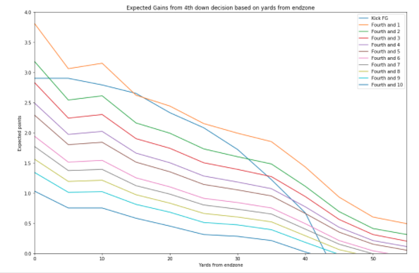

Imagine your favorite team in the playoffs.. it's 4th and 1 on the 8 yard line and your team has the ball.. Who does your coach send out?
A hot topic for many football fans during games.. Should they kick the field goal or should they run a play?
Of course, everyone has their own opinions and there are many factors involved; like the time left, number of timeouts and the score, but what do the numbers tell us about these two strategies?
My aim is to answer that very question! In a game-situation which choice really will pay off more in the long run?
The dataset used from Kaggle.com has every NFL play from 2009 to 2018. The dataset contains about 450,000 individual plays!
In order to really compare we are going to look at the expected score value from kicking vs "going for it". I'll take you step by step through the process so you can visualize the data for yourself.
First, we'll look at our chance to make a first down. Now, I have chosen to display the data as "Single play" first downs. This allows us to have more data to work with- I am comparing yards needed for a first down to the probility that they will achieve that yardage in one play.
This distinction is important because it allows us to have data for potential 4th down situations even though there isn't much historical data! Teams do not go for 4th and long very often!
The table and box plot below shows the distribution of results we can expect.
As you can see, the further you have to go the less likely you are to make the down--simple. The averages range from about 65% chance at a 4th and 1 to a 20% chance at 4th and 10. Just to double check-- the actual make % of historical 4th and 1 attempts is about 65% as well!
Now, we know the likelihood to make the first down but how often can we expect to actually turn that first down into a touchdown?
This is a very important question because the data can also be used to determine how likely the OTHER TEAM will score if we turn the ball over.
I have taken every drive and first down in the dataset and created a graph depicting your likelihood to score based on where you have a first down. The closer you get to the endzone the higher your chances of scoring. However, this trend dramatically improves within the 15 yard line!

Based on the data we can get an idea of the steep drop off in success that occurs outside of the redzone.
Now, taking these two graphs we can get a sense that 4th and 1 plays in the red zone might be pretty successful...
Of course, the other side of the problem is the field goal! Why risk it when the kicker ALWAYS makes these kicks right?
The graph below depicts the probability of making a field goal given the LENGTH OF THE KICK. The goalposts are 10 yards behind the goal line and the kicker is usually 7-8 yards behind the line of scrimmage.
You can see that the kickers are more accurate overall and have a tighter variation at closer distances. The results range from about 97.5% accuracy at close range to about 25% from the 50 yard line. This drop is not linear.. there is a massive drop off in accuracy and variability at the end range!-- maybe the kicker doesn't ALWAYS hit these..
To put it ALL together we can look at the graph below. This depicts a 4th down scenario where you're trying to decide to kick or to go for the touchdown. As the yardage changes your decision might have to change as well..
For simplicity, I have assumed that a touchdown is 7 points-which is the average points received including the point/two point after attempt. This is the results for every team, every play. So if your favorite team has a dominant offense or a kicker who is off his game the expectations could be very different!
Of course, for both "Kicking" and "Going for it" I have factored in the expected score of your opponents if you do turn the ball over.

Now, we can see that the 4th and 1 "Go for it" expectations are primarily dominant when compared to the field goal. However, there is a steep drop off beyond 4th and 1 where your best bet is most likely to kick. Of course, if you don't have much faith in your team, or your kicker..and you're the Jets.. you might just want to punt it!
There are TONS of other factors to consider in a game-time decision so this is not meant to be an exhaustive analysis- only an introduction and example of using analytics and visualizations to convey information. I take no credit for the data collection. However, the analysis, visualizations and coding for the webpage were all done by myself. Analysis was done using Python